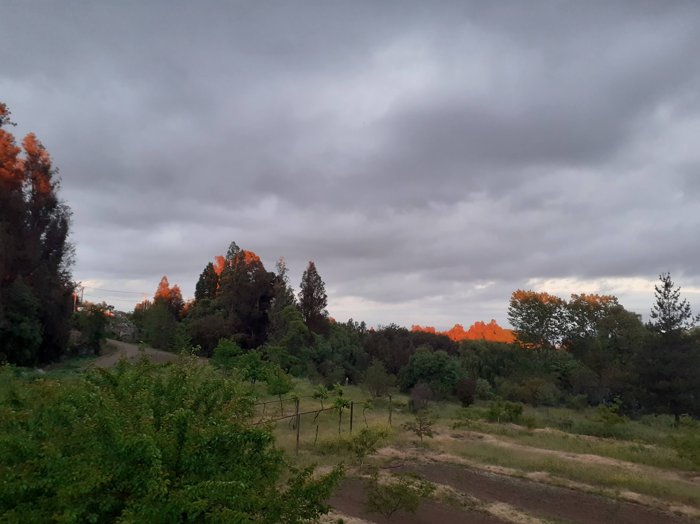

About Lavashak
Lavashak is a delicious and healthy snack made from all-natural dried fruit. Our fruit leather (lavashak) is packed with nutrients, fiber, and vitamins, making it the perfect choice for a guilt-free treat. Enjoy the authentic taste of various fruits without any added preservatives or chemicals.
Our Products
- Apple Lavashak
- Apricot Lavashak
- Berry Lavashak
- Cherry Lavashak
- Peach Lavashak
- Plum Lavashak
- Pomegranate Lavashak
Contact Us
Email: info@lavashak.com
Phone: (555) 123-4567